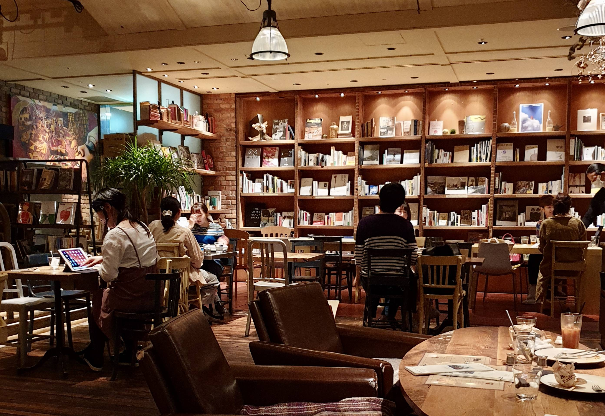

BIBLIOTECA - BOOK STORE

Café Avalon tiene una biblioteca con un catálogo de miles de libros que podés leer mientras tomás un buen café de especialidad, gracias a nuestro servicio de retiro de libros. Además, los libros de nuestro catálogo también están a la venta, por lo que si te quedaste con las ganas de terminar ese libro que te atrapó, te lo podés llevar a tu casa. El servicio de biblioteca funciona abonando un adicional al consumo de cafetería por hora de libro retirado. Los libros no tienen préstamo a domicilio, son para consumo en el local. Si querés asegurarte tu mesa, no olvides hacer una reserva.
Sacá tu turno
y vení a conocernos.